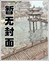

类别：科幻灵异
状态：连载
最新章节：第771章 破损点
更新：2026-05-25 12:46:52
开始阅读加入书架我的书架
在日常之下，在理性尽头，在你所熟悉的世界之外——是你从未想象过的风景。
当于生第一次打开那扇门的时候，他所熟悉的世界便轰然倒塌。
而那直抵世界根源的“真相”，扑面而来。
第771章 破损点
第770章 又醒一个
第769章 眼睛
第768章 往昔岁月之隙
第767章 歷史坍塌地
第1章 雨
第2章 无人受害
第3章 上锁的房间
第4章 房间里没人
第5章 画中的艾琳
第6章 友好交流的第一步
第7章 艾琳的脱困方案
第8章 别乱开门
第9章 一点真相
第10章 花开二度
第11章 事不过……三
第12章 这地方有人！？
第13章 碰面
第14章 胡狸
第15章 困于此地
第16章 饥饿
第17章 门
第18章 调查人员
第19章 回家
第20章 艾琳的情报与建议
第21章 一回生，二回熟
第22章 色香味俱全
第23章 疑点
第24章 镜中景
第25章 梦中狐
第26章 艾琳的本事
第27章 入梦深处
第28章 “饥饿”
第29章 跟人偶相处的日子
第30章 开门人
第31章 擦肩
第32章 血的测试
第33章 延迟生效？
第34章 成功复现，通道可控！
第35章 藏龙卧虎二大队
第36章 一夜无眠的人（不是于生）
第37章 筹备身体的第一步
第38章 塑造
第39章 成功了，但没完全成功
第40章 情况跟预料的不一样
第41章 自由的人偶
第42章 兴奋的艾琳
第43章 艾琳的方案
第44章 吞没
第45章 接触，扎根
第46章 门开大了
第47章 路分两头
第48章 进食之日
第49章 开门杀（无误）
第50章 胡狸的助攻